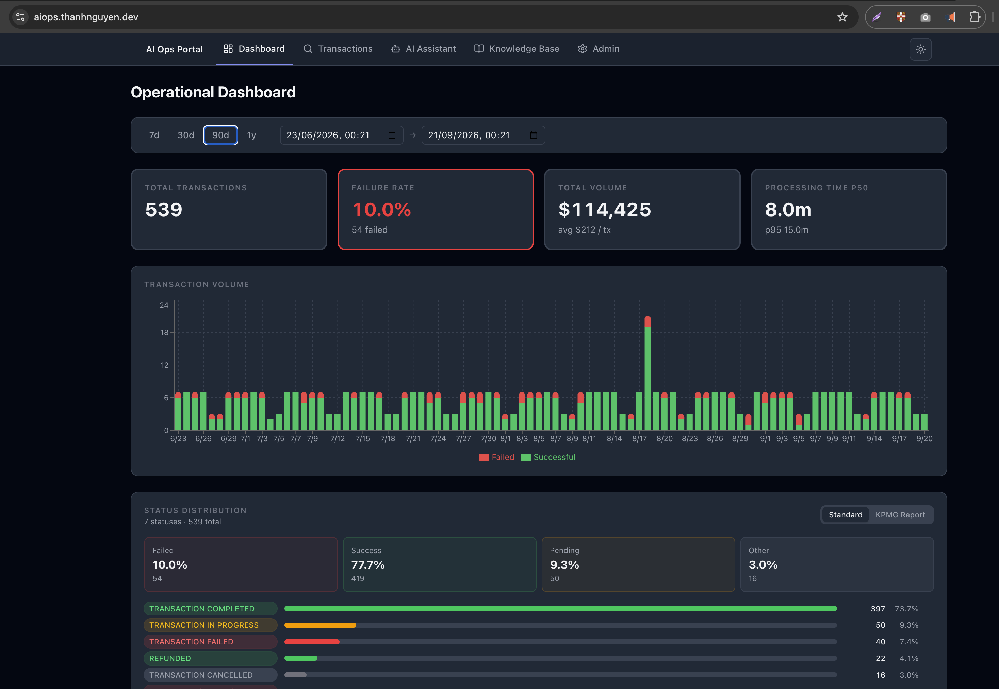
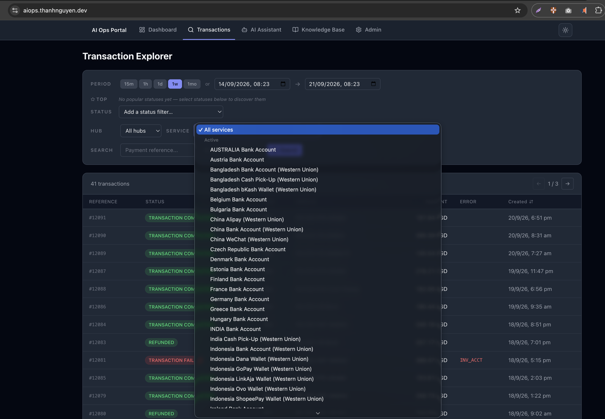
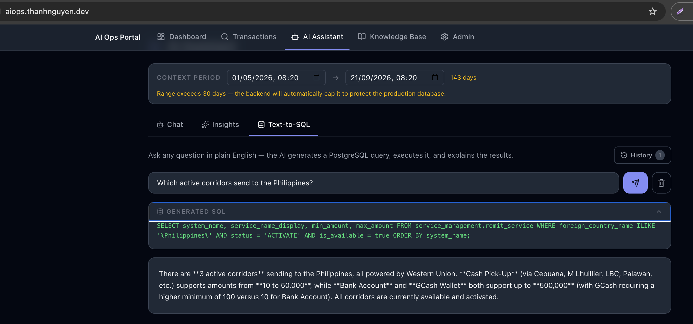
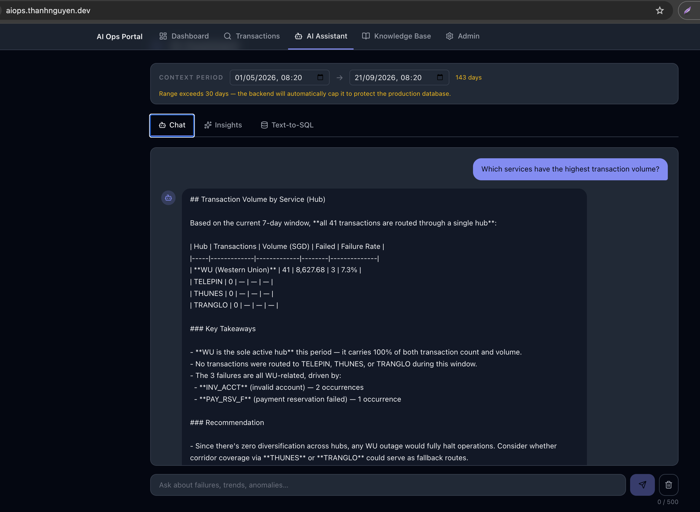
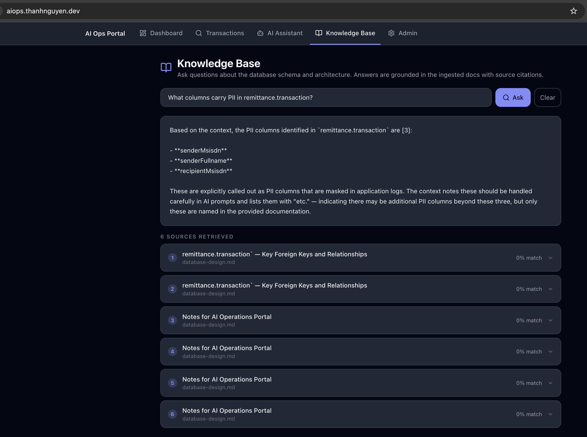
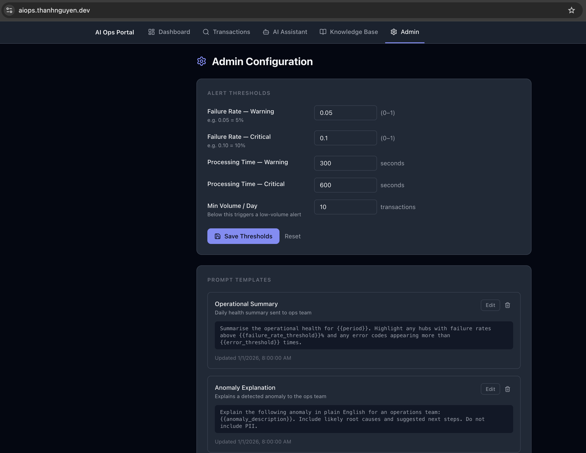

AI Operations Portal
Architecture & Design
1. Project Overview
The AI Operations Portal is an enterprise-grade operational intelligence platform built for the fintech remittance domain. It demonstrates full-stack software engineering competency across frontend, backend API, AI/LLM integration, database design, and cloud deployment.
| Feature | Description |
|---|---|
| Operational Dashboard | Transaction volumes, failure rates, hub performance, processing time percentiles (p50/p95) in real time |
| AI Assistant | Natural language → SQL query engine; converts business questions into live DB queries and streams plain-English answers |
| Transaction Explorer | Full-text and filtered search across transaction history with complete audit trail |
| AI Insights Engine | Anomaly explanations, trend observations, and operational recommendations powered by Claude Opus 4.6 |
| Knowledge Base (RAG) | Hybrid retrieval-augmented generation over internal operational documentation |
| Admin Configuration | Prompt management, AI behaviour thresholds, alert configuration |
The system targets the operational pattern of the DASH Wallet remittance platform at NCS Pte Ltd/Singtel — a production system processing international money transfers across Singapore to 35+ destination countries via four payment hubs (TELEPIN, THUNES, TRANGLO, Western Union).
Application Screenshots
The following screenshots show the live deployment at aiops.thanhnguyen.dev with realistic seed data spanning 14 months across four remittance hubs.






2. High-Level Architecture
┌──────────────────────────────────────────────────────────────┐ │ Browser (React SPA) │ │ Dashboard │ AI Assistant │ Tx Explorer │ Admin │ └──────────────────────┬───────────────────────────────────────┘ │ HTTPS / SSE streaming │ (Vite dev proxy → :8000) ▼ ┌──────────────────────────────────────────────────────────────┐ │ AI Service (FastAPI / Python 3.12) │ │ │ │ /api/v1/dashboard/* — Operational metrics │ │ /api/v1/transactions — Tx search & detail │ │ /api/v1/assistant — Text-to-SQL (SSE streaming) │ │ /api/v1/ai/* — LLM insights / chat │ │ /api/v1/rag/* — Knowledge base │ │ /api/v1/admin/* — Config management │ │ /api/v1/history/* — Query history & favourites │ │ │ │ ┌──────────────┐ ┌────────────────────┐ ┌─────────────┐ │ │ │ LLM Layer │ │ RAG Engine │ │ Cache │ │ │ │ Claude │ │ ChromaDB + BM25 │ │ In-memory │ │ │ │ Opus 4.6 │ │ Hybrid retrieval │ │ ref data │ │ │ │ (Ollama fb) │ │ + RRF re-ranking │ │ 250 ctry │ │ │ └──────────────┘ └────────────────────┘ └─────────────┘ │ └──────────────────────┬───────────────────────────────────────┘ │ asyncpg / SQLAlchemy 2 async ▼ ┌──────────────────────────────────────────────────────────────┐ │ PostgreSQL — Neon Cloud (dash database) │ │ │ │ ml_schema — countries, operators, FX rates │ │ service_management — partners, corridors (4 hubs) │ │ remittance — transactions, audit trail │ │ customer — beneficiary profiles │ │ payment — SOF / PayNow records │ └──────────────────────────────────────────────────────────────┘
Deployment topology
| Component | Platform | Notes |
|---|---|---|
| Frontend (React SPA) | Vercel | CDN-distributed; auto-deploys on push to master |
| AI Service (FastAPI) | Render | Container service, port 8000, env vars injected |
| Database | Neon | Serverless Postgres, dash database, single endpoint |
| LLM | Anthropic API | Claude Opus 4.6 primary; Ollama/Mistral local fallback |
| RAG vector store | ChromaDB (in-process) | Embedded in AI Service container; no external service |
| LLM observability | Langfuse (optional) | Self-hosted via Docker; disabled when keys are unset |
3. Frontend Architecture
Stack: React 19, Vite 8, TypeScript 5.9, TailwindCSS v4, shadcn/ui, @base-ui/react, Recharts
Component structure
frontend/src/ ├── pages/ │ ├── Dashboard.tsx # Overview metrics, charts, hub breakdown │ ├── AiAssistant.tsx # Chat interface, SSE streaming display │ ├── TransactionExplorer.tsx # Filterable transaction list + audit timeline │ ├── KnowledgeBase.tsx # RAG document management │ └── AdminConfig.tsx # AI prompt & config editor ├── components/ # Shared UI components (cards, charts, tables) ├── hooks/ # Custom React hooks (useSSE, useDashboard…) ├── types/ # TypeScript domain types (Transaction, Hub…) └── lib/ # API client utilities
Design decisions
Server-Sent Events (SSE) for AI streaming. The AI assistant and insight endpoints use SSE rather than WebSockets.
SSE is unidirectional (server → client), stateless per connection, and compatible with standard HTTP infrastructure (proxies, CDN).
This matches the streaming output pattern of LLMs and simplifies the client — the browser's native EventSource API handles reconnection automatically.
Vite dev proxy. In local development, Vite proxies all /api requests to http://localhost:8000,
eliminating CORS issues during development without changing the production URL shape.
TailwindCSS v4 + shadcn/ui. Chosen for rapid, accessible UI composition. shadcn/ui provides copy-owned components — no third-party runtime dependency on a component library — enabling full customisation without upstream breakage.
4. Backend Architecture (AI Service)
Stack: Python 3.12, FastAPI, Pydantic v2, SQLAlchemy 2 (async), asyncpg, Uvicorn
Application lifecycle
# app/main.py — startup sequence
async with lifespan(app):
init_engines() # SQLAlchemy async engines (ml_db + keycloak schemas)
await init_portal_db() # SQLite portal DB (query history, favourites)
config_store.init() # Load admin-configurable AI prompts
await load_cache(ml_session) # Warm in-memory reference data cache
load_bm25_from_store() # Build BM25 index from ChromaDB for hybrid RAG
Database layer
Two logical databases are served from a single Neon endpoint (dash),
accessed via two separate SQLAlchemy async engines:
| Engine | Schemas served | Purpose |
|---|---|---|
ml_db engine | ml_schema, service_management | Reference/lookup: countries, operators, FX rates, partners, corridors |
keycloak engine | remittance, customer, payment | Operational: transactions, audit trail, beneficiaries, payments |
asyncpg driver. The database.py module strips sslmode from the URL
(not supported by asyncpg) and passes ssl=True via connect_args, ensuring compatibility with Neon's TLS requirement.
Async SQLAlchemy 2. All database access uses the async session pattern with AsyncSession and select() / execute().
FastAPI dependency injection (Depends(get_keycloak_db)) manages session lifecycle per request, including automatic commit/rollback.
Reference data cache
At startup, reference data (250 countries, 112 remittance services, 4 partners) is loaded into an in-memory ReferenceCache.
Dashboard endpoints use this for ID-to-name resolution (e.g., hub_id → "THUNES") without per-request DB round-trips.
API router structure
| Router | Prefix | Description |
|---|---|---|
dashboard.py | /api/v1/dashboard | Overview, volume trend, status distribution, processing time percentiles, hub breakdown |
transactions.py | /api/v1/transactions | Paginated search with filters (date, status, hub, service, text) |
assistant.py | /api/v1/assistant | Text-to-SQL natural language query; SSE streaming |
ai.py | /api/v1/ai | LLM-generated summaries, anomaly explanations, recommendations |
rag.py | /api/v1/rag | Knowledge base ingest, status, retrieval |
admin.py | /api/v1/admin | AI prompt and config management |
history.py | /api/v1/history | Query history, favourites |
Dashboard metrics design
All dashboard queries target remittance.transaction with consistent filters: created_date range
(default: last 7 days, capped at 90 days), optional hub_id, optional service_id.
The 90-day cap (_MAX_RANGE_DAYS) is a production-database protection measure preventing full-table scans.
- Overview:
COUNT(*),SUM(CASE failed THEN 1 END),SUM(remittance_amount)in a single query - Volume trend:
date_trunc(interval, created_date)group-by with failure overlay; interval =hourorday - Status distribution:
GROUP BY status ORDER BY COUNT DESC - Processing time: p50/p95 computed in Python over
(updated_date - created_date)for terminal transactions - Hub breakdown:
GROUP BY hub_id, hub_namewith failure rate and volume per hub
5. AI / LLM Integration Architecture
LLM client (app/llm.py)
| Function | Pattern | Use cases |
|---|---|---|
stream_response(messages, system) | Async generator — yields text chunks | AI assistant, insight streaming |
complete(messages, system) | Awaitable string | SQL generation, structured output |
Primary model: claude-opus-4-6 (Anthropic) with adaptive thinking enabled.
Fallback: On BadRequestError or AuthenticationError, falls back to Ollama's OpenAI-compatible API (local Mistral model).
Concurrency control: asyncio.Semaphore (configurable via ANTHROPIC_CONCURRENCY, default 5) limits simultaneous in-flight LLM requests.
Timeout: httpx.Timeout(connect=30, read=600) — 10-minute read timeout for complex analytical queries.
Text-to-SQL pipeline
Relevant table/column definitions loaded from app/schema_context/. RAG retrieval adds domain knowledge from ChromaDB.
System prompt: schema context + business rules + security constraints. Output: valid PostgreSQL SELECT (DML blocked by prompt).
Regex check rejects non-SELECT statements. Query executed against read-only DB connection.
SQL result data + original question → plain-English answer, streamed token-by-token via SSE.
SSE event types
| Event type | Content |
|---|---|
thinking | LLM's reasoning trace (when extended thinking is enabled) |
sql | Generated SQL query |
result_preview | Raw query result row count / column names |
chunk | Plain-English explanation text chunk |
error | Structured error with code and message |
done | End of stream |
RAG engine (app/rag/)
Query
├── Dense retrieval: ChromaDB cosine similarity
│ (text-embedding-3-small or nomic-embed-text)
└── Sparse retrieval: BM25 index (built at startup from ChromaDB corpus)
│
└── Reciprocal Rank Fusion (RRF) → re-ranked results
│
└── Top-k chunks → injected into LLM context
Embedding model: text-embedding-3-small (OpenAI) when OPENAI_API_KEY is set;
otherwise nomic-embed-text via Ollama (fully local, no external API required).
LLM observability (Langfuse)
When LANGFUSE_PUBLIC_KEY and LANGFUSE_SECRET_KEY are configured, all LLM calls are traced.
Each trace records: model, input/output tokens, latency, and the full prompt/completion.
Supports cost tracking per feature area, latency profiling, and prompt quality analysis.
6. Database Design
Schema overview
| Schema | Tables | Role |
|---|---|---|
ml_schema | country, mobile_operator, ml_fx_rates | Reference/lookup: destination countries, mobile money operators, live FX rates |
service_management | external_partner, remit_service | Hub configuration and corridor definitions (TELEPIN, THUNES, TRANGLO, WU) |
remittance | transaction, transaction_aud | Core operational data — transaction lifecycle and full audit trail |
customer | beneficiary | Recipient profiles (synthetic data in UAT) |
payment | ml_m_sof_payment, overseas_payment_transactions | Source-of-funds records (PayNow, NETS_CLICK) |
Key table: remittance.transaction
| Column | Type | Description |
|---|---|---|
id | bigserial | Surrogate primary key |
transaction_code | varchar | Business transaction identifier |
status | varchar | Transaction lifecycle status |
hub_id | int4 | FK to external_partner.id — the payment hub |
hub_name | varchar | Denormalised hub name (retained for query performance) |
service_id | int4 | FK to remit_service.id — the remittance corridor |
remittance_amount | numeric | Sender amount (SGD) |
recipient_amount | numeric | Destination currency amount |
retail_fee | numeric | Fee charged to sender |
created_date | timestamp | Transaction creation time (SGT, no timezone stored) |
updated_date | timestamp | Last status update time |
Transaction status model (State Machine)
Same State Machine design as the production DASH Wallet remittance backend:
CREATED → PAYMENT_RESERVED → SUBMITTED → TRANSACTION_COMPLETED
↘ TRANSACTION_FAILED
↘ HUB_TIMEOUT
↘ SOF_PAY_FAILED
↘ PAYMENT_RESERVED_FAILED
TRANSACTION_COMPLETED → REFUNDED (in exceptional cases)
Audit trail: remittance.transaction_aud
Every status transition generates an audit row, enabling full reconstruction of a transaction's lifecycle. This matches the audit pattern used in the production DASH Wallet system.
7. Security Architecture
API security
- All traffic uses HTTPS (enforced by Vercel and Render)
- CORS configured to allow only the production frontend origin in non-local environments
- Read-only database access: the text-to-SQL pipeline enforces
SELECT-only via prompt constraints and input validation - Pydantic v2 models validate and coerce all API inputs at the boundary
PII handling
- All PII fields in the UAT dataset use Faker-generated synthetic data only — no real customer names, MSISDNs, or account numbers
- The text-to-SQL system prompt instructs the LLM to mask PII columns in output
- Documentation masks PII column examples
Secrets management
- API keys and DB credentials stored as environment variables; never committed to source control
.env.localis gitignored; only.env.example(placeholder values) is committed- Render and Vercel inject secrets at runtime via their environment variable stores
Dependency security
requirements.txtpins exact versions to prevent supply-chain drift- Python 3.12 is mandated — Python 3.13+ breaks
pydantic-coreandgreenlet - All third-party packages are open-source with active maintenance
8. Deployment Architecture
CI/CD flow
git push → master
│
├── Vercel (Frontend)
│ └── npm run build → static assets deployed to CDN globally
│
└── Render (Backend)
└── Docker build → container deployed to Render service (port 8000)
Environment configuration
| Variable | Required | Purpose |
|---|---|---|
APP_ENV | Yes | local / uat / prod — controls dev docs, log verbosity |
ML_DB_URL | Yes | asyncpg connection string for ml_schema + service_management |
KEYCLOAK_DB_URL | Yes | asyncpg connection string for remittance + customer + payment |
ANTHROPIC_API_KEY | Yes | Anthropic API access |
OPENAI_API_KEY | No | Enables OpenAI embeddings for RAG; falls back to Ollama |
LANGFUSE_* | No | LLM observability tracing (disabled when unset) |
ANTHROPIC_MODEL | No | Override LLM model (default: claude-opus-4-6) |
ANTHROPIC_CONCURRENCY | No | Concurrent LLM request limit (default: 5) |
Health monitoring
GET /health
→ {"status": "ok", "env": "uat", "cache": {"loaded": true, "countries": 250, "services": 112, "partners": 4}}
Verifies reference data cache loaded at startup — a proxy for DB connectivity and data integrity.
9. Key Engineering Decisions and Trade-offs
1. Python FastAPI over Java Spring Boot for the AI service
The production DASH Wallet backend uses Java 17 / Spring Boot 3. The AI service is built in Python because:
- The Anthropic Python SDK provides native async streaming support
- ChromaDB, BM25 (
rank-bm25), and sentence-transformers are Python-native with no mature Java equivalents - FastAPI's async model matches the streaming LLM pattern natively using
AsyncGeneratorandStreamingResponse - Python 3.12's
asynciohandles concurrent SSE connections on a single Uvicorn worker efficiently
2. SQLAlchemy 2 async over raw asyncpg
Raw asyncpg would be faster, but SQLAlchemy 2's async API provides:
- Type-safe query construction (prevents SQL injection by construction)
- Connection pool management with configurable pool size and overflow
- Consistent session lifecycle management via FastAPI's dependency injection
- Easier testability (session mocking in pytest)
3. Hybrid RAG retrieval (BM25 + vector)
Pure vector search misses exact keyword matches (specific column names, status codes). BM25 alone misses semantic similarity. The hybrid approach with Reciprocal Rank Fusion combines both signals. The BM25 index is built in memory at startup from ChromaDB's stored document corpus — requiring no additional infrastructure.
4. In-memory reference cache
250 countries, 112 services, and 4 partners are loaded once at startup. This eliminates N+1 query patterns in the dashboard hub breakdown and avoids per-request DB round-trips for stable reference data. Cache invalidation requires a service restart — acceptable for data that changes rarely.
5. Single Neon database for UAT
Production uses two PostgreSQL instances. Consolidating into one Neon dash database reduces operational overhead
(one connection string, one billing unit, within Neon's free tier).
The application uses two separate SQLAlchemy engines pointing to the same endpoint —
the schema separation maintains the structural boundary without requiring two databases.
10. ACS Evidence Mapping
This project demonstrates the following ICT competencies for the ACS RPL assessment ANZSCO 261313 — Software Engineer:
Application Systems (Topic Area 3)
| Competency | Evidence in this project |
|---|---|
| System architecture design | Three-tier architecture (SPA + API service + managed database) with clear separation of concerns across 7 distinct API routers |
| Asynchronous application design | FastAPI async endpoints, SQLAlchemy 2 async sessions, asyncio concurrency control — all production-pattern async Python |
| Database design & querying | 5 schemas, 10 tables; complex analytical queries using date_trunc, CASE, GROUP BY, percentile computation; async SQLAlchemy ORM |
| API design | RESTful JSON APIs with Pydantic v2 request/response models; SSE streaming for AI output |
| LLM integration | Anthropic Claude API with fallback design, streaming, prompt engineering, and structured output parsing |
| State machine design | Transaction status model with defined valid transitions — matching the production DASH Wallet pattern |
| RAG system design | End-to-end RAG pipeline: ingestion → chunking → embedding → hybrid retrieval → LLM context injection |
Cyber Security (Topic Area 4)
| Competency | Evidence in this project |
|---|---|
| Secure secrets management | Environment-variable-only secrets; .env.local gitignored; separate UAT/prod configurations |
| PII data protection | Synthetic-only PII in UAT dataset (Faker); prompt-level PII masking in AI output |
| Input validation | Pydantic v2 on all API inputs; SQL injection prevention via SQLAlchemy ORM; read-only SQL enforcement in text-to-SQL pipeline |
| HTTPS enforcement | All traffic over TLS — Vercel and Render enforce HTTPS on all environments |
Professional ICT Practice (Topic Areas 1 & 2)
| Competency | Evidence in this project |
|---|---|
| Full software delivery lifecycle | Requirements → architecture design → implementation → testing → deployment → documentation — all delivered independently |
| Technical documentation | Runbooks, environment verification guide, architecture document, database design doc — maintained alongside code |
| Testing | Vitest (frontend, 29 tests) + pytest (backend, 101 tests); both suites run in CI before merge |
| Observability | Langfuse LLM tracing, structured logging, /health endpoint, Render service monitoring |
| Deployment automation | Vercel auto-deploy on push; Render container build pipeline; environment-specific config management |
11. Technology Reference Summary
| Layer | Technology | Version | Rationale |
|---|---|---|---|
| Frontend framework | React | 19 | Latest stable; concurrent rendering for SSE updates |
| Build tool | Vite | 8 | Sub-second HMR; native ESM; first-class TypeScript |
| CSS | TailwindCSS | v4 | Utility-first; zero-runtime overhead; JIT compilation |
| UI components | shadcn/ui | latest | Copy-owned components; full customisation; accessible |
| Charts | Recharts | 2.x | React-native charting; composable API |
| Backend framework | FastAPI | 0.111+ | Native async; auto OpenAPI docs; Pydantic integration |
| Language | Python | 3.12 | Required: pydantic-core binary compatibility |
| ORM | SQLAlchemy | 2.x async | Type-safe queries; async session; connection pooling |
| DB driver | asyncpg | 0.29+ | High-performance async PostgreSQL driver |
| LLM | Claude Opus 4.6 | claude-opus-4-6 | Best reasoning quality; extended thinking; streaming |
| LLM fallback | Ollama / Mistral | local | Offline capability; cost-free development |
| Vector store | ChromaDB | 0.5+ | Embedded (no separate service); persistent on-disk store |
| Embeddings | text-embedding-3-small | OpenAI | High quality; low cost; 1536-dim |
| Embeddings fallback | nomic-embed-text | Ollama | Fully local; no API key required |
| Database | PostgreSQL | 16 (Neon) | ACID; strong date_trunc / window functions for analytics |
| Frontend host | Vercel | — | Zero-config CDN; automatic HTTPS; preview deployments |
| Backend host | Render | — | Container service; managed TLS; env var injection |
| DB host | Neon | — | Serverless Postgres; autoscale; free tier for UAT |
| LLM observability | Langfuse | self-hosted | Open-source LLM tracing; prompt cost analysis |